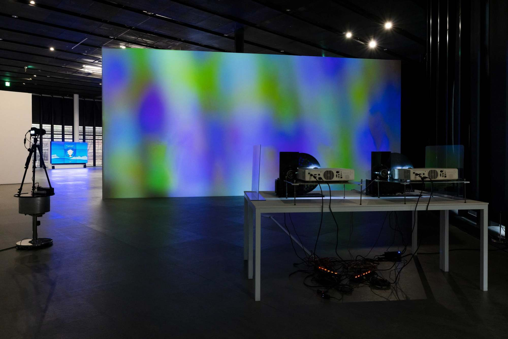

《나선 필름》 — 《빅브라더 블록체인》, 백남준아트센터, 2024Spiral Film — Big Brother Blockchain, Nam June Paik Art Center, 2024
영화의 장치가 스스로 보기 시작하는 순간.The moment the cinematic apparatus begins to see for itself.
권희수는 확장영화, 라이브 시네-퍼포먼스, 단채널 영상, 사운드 작업을 통해 시점의 확장과 시청각적 장치, 신체적 감각의 관계를 다룹니다. 이곳은 그 작업과 활동이 지금 어디에 있는지를 모아 두는 기록입니다.HeeSue Kwon works across expanded cinema, live cine-performance, single-channel video and sound — on the expansion of viewpoint, and on the relation between audiovisual apparatus and bodily perception. This site gathers where that work is now.
CINE코드.XYZ — Archive & recent activity, 2019–2026
진행 중인 프로젝트Upcoming projects 2026
모든 작업All works ↗-
차경과 내경Liminal Scape · Inner Scope
2026, 아트선재센터 — Director · 퍼포머 권희수2026, Art Sonje Center — directed and performed by HeeSue Kwon
아트선재센터 아트홀 B1, 서울 — 2026년 12월 10–13일Art Hall B1, Art Sonje Center, Seoul — 10–13 December 2026
12. 10 15:30 프로그램 I 《동공 / Iris》 라이브 상영 퍼포먼스10 Dec, 15:30 — Programme I, Iris, live screening performance
Director · 퍼포머 권희수 — 공동주최 권희수 · 로트링겐 · 아트선재센터, 초청 아웃테이크스크리닝그룹Directed and performed by HeeSue Kwon — co-organised with Lothringen and Art Sonje Center, invited by Outtakes Screening Group
-
이미지 준비 중Image to follow
Klein's EyeKlein's Eye
시각의 지질학적 역사 — A Geological History of VisionA Geological History of Vision
화순 운주사 · 인도네시아 선사 암벽화 · 내몽골 바오터우Unjusa, Hwasun · prehistoric rock art, Indonesia · Baotou, Inner Mongolia
촬영 및 이미지 실험 진행 중 — 2026Filming and image experiments in progress — 2026
권희수 (연출 · 촬영 · 편집) — 물과 빛의 광학 실험, ComfyUI 기반 이미지 변환, 필름과 디지털의 결합HeeSue Kwon (direction, camera, edit) — optical experiments with water and light, ComfyUI image transformations, film and digital combined

대표 작업Selected works
작업 전체Works index ↗-
임계Liminality
2025, 40분, DCP2025, 40 min, DCP
부산대학교 블랙박스 시리즈 2026 vol.2 — 2026년 10월 29일Black Box Series 2026 vol.2, Pusan National University — 29 October 2026
《임계》 프로그램 2, 공간서로 2층, 서울 — 2024년 12월 18–21일Liminality Programme 2, Seoro Space, Seoul — 18–21 December 2024
Director KWON Heesue — Cinematographer PARK Chowon, KWON Heesue, WANG Jieun — Sound JANG JeongWoo, KWON HeesueDirector KWON Heesue — Cinematographer PARK Chowon, KWON Heesue, WANG Jieun — Sound JANG JeongWoo, KWON Heesue
-
창 불 흐르는Melting Fire Iceman
2024, 60분, 라이브 시네-퍼포먼스2024, 60 min, live cine-performance
35th Singapore International Film Festival, Undercurrent — 2024년 11월35th Singapore International Film Festival, Undercurrent — November 2024
《Avant-Garde Now: Wayfinding》, M+, 홍콩 — 2026Avant-Garde Now: Wayfinding, M+, Hong Kong — 2026
《Invisible Spectrum 2》, Ramp, 베이징 — 2026년 7월 4일–8월 1일Invisible Spectrum 2, Ramp, Beijing — 4 July–1 August 2026
AI interpolation Hyunoh Sung — Live camera Yu Jian Wang — Technical support Sumin KimAI interpolation Hyunoh Sung — Live camera Yu Jian Wang — Technical support Sumin Kim
-
나선 필름Spiral Film
2024, 라이브 상영2024, live screening
《빅브라더 블록체인 — 굿모닝 미스터 오웰 40주년 특별전》Big Brother Blockchain — Good Morning Mr. Orwell 40th Anniversary
백남준아트센터 제2전시실, 용인 — 2024년 3월 21일–8월 18일Gallery 2, Nam June Paik Art Center, Yongin — 21 March–18 August 2024
기획 이수영, 임채은 — 참여작가 권희수 외Curated by Lee Sooyoung and Lim Chaeeun — with HeeSue Kwon and others


최근 활동Recent activities
활동 전체All activities ↗- 2026. 10《임계》 라이브 스크리닝Liminality, live screening부산대학교 블랙박스 시리즈 2026 vol.2Black Box Series 2026 vol.2, Pusan National University
- 2026. 09《바깥은 없다》 — LUF ScopeNo hay afuera — LUF ScopePROYECTOR 2026 · HYPER HOUSE, 마드리드PROYECTOR 2026 · HYPER HOUSE, Madrid
- 2026. 07《Invisible Spectrum 2》 — Melting Fire IcemanInvisible Spectrum 2 — Melting Fire IcemanRamp, 베이징Ramp, Beijing
- 2026《Avant-Garde Now: Wayfinding》 — Melting Fire IcemanAvant-Garde Now: Wayfinding — Melting Fire IcemanM+, 홍콩M+, Hong Kong
- 2025《LUF Scope》LUF Scope54th International Film Festival Rotterdam54th International Film Festival Rotterdam
- 2024. 11《Melting Fire Iceman》 인터내셔널 프리미어Melting Fire Iceman, International Premiere35th Singapore International Film Festival35th Singapore International Film Festival
이미지와 스크린 사이의 환영적인 거리에서 떠오르는, 실시간으로 펼쳐지는 매혹적인 감각의 경험.A real-time, fascinating sensory experience that emerges in the illusory distance between the image and the screen.
Miquel Martí Freixas — IFFR 2025, 《LUF Scope》